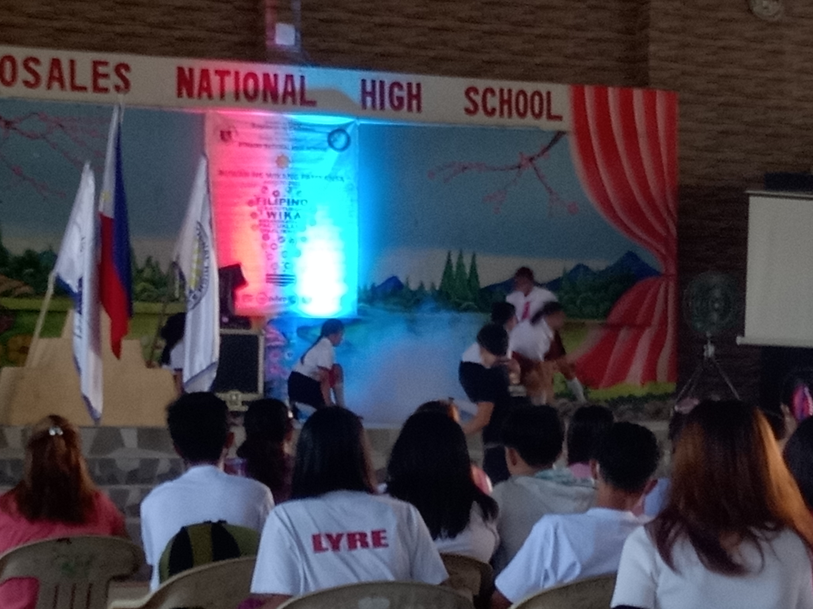
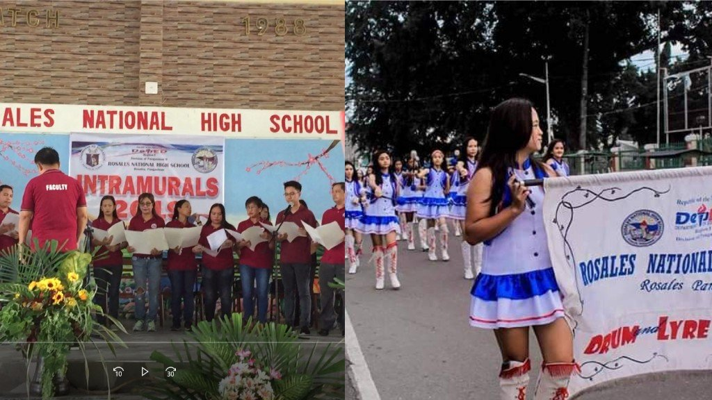

| Home | About | Strand | Events | Facilities |
|---|
the Philippine Red Cross provides six major services: Blood Services, Disaster Management Services, Safety Services, Health Services, Social Services, Red Cross Youth and Volunteer Services.
All of them embody the fundamental principles of the International Red Cross and Red Crescent Movement –
humanity, impartiality, neutrality, independence, voluntary service, unity and universality. These values guide and inspire all Red Cross staff and volunteers, to whom being a Red Crosser is more than just a philosophy but a way of life.

Buwan ng Wikang Pambansa (Tagalog for 'National Language Month'),[1][2] simply known as Buwan ng Wika ('Language Month'),
is a month-long annual observance in the Philippines held every August to promot

INTRAMS. This is an English word widely used by students in the Philippines. It is short for “intramurals,” particularly sports tournaments of schools. The word “intramural” literally means “within walls.”.
May intrams kami sa susunod na buwan. We have “intrams” next month.